CoderLLM训练记录 torchrun的时候执行rsync命令会导致NCCL通信超时，rsync 大文件传输会吃满节点间网络带宽，导致 NCCL 通信包排队等待。但是先rsync再torchrun就没事，有趣。
预训练-Dense 首先基于已有的chat-LLM的代码进行了训练，使用了 miniMind 的Dense模型代码，架构上来讲也是比较经典易懂的Decoder-Only结构，使用CLM任务训练，原模型在成熟的对话数据集下训练效果也不错。具体架构如下：
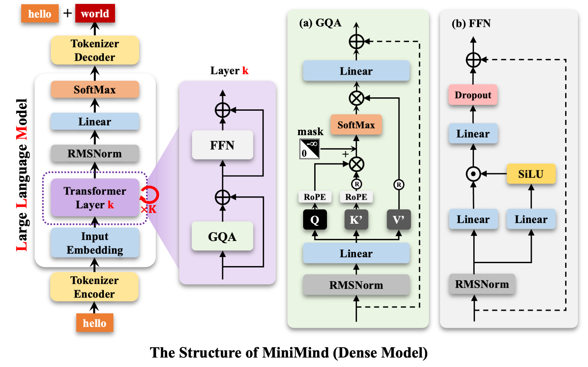一个低级但又不太低级的错误 数据集选用的是hf上的 ZhentingNLP/code_pretraining_data 这个数据集，一共16G数据，但后来数据集就被作者删了。
训练任务的选择上，上来就犯了个低级错误。某天跟Qwen聊天，Qwen让我试一试加入MLM，我感觉不太对劲，转头问了问Deepseek，Deepseek也认可，于是我也没多想，只是觉得有道理，就在原有的CLM基础上，使用了15%的MLM，剩余的85%仍然是CLM，但训练结果并不理想，但是看loss似乎并没有什么问题，于是只用CLM进行训练，发现效果竟然比MLM+CLM要好。
其实这属于经典的想当然的低级问题，因为MLM本就是用于编码-解码架构的模型，没听说过哪个解码模型用MLM训练，但具体是为什么呢，其实思考一下答案也很简单，我们还是回到模型本身上来。
简言之，根本原因在于Decoder-Only架构的模型与MLM任务存在根本性不匹配 。MLM需要双向上下文，目标是预测被掩码的token，但必须基于完整的前后上下文 ，这要求模型使用非因果注意力机制，允许每个token访问序列中所有其他token。但Decoder-Only架构模型强制使用因果掩码，模型在设计上是自回归的，注意力机制通过因果掩码确保每个token只能看到左侧历史信息，不能访问右侧未来信息。
这其实就导致模型无法访问被掩码位置的右侧上下文（因为因果掩码阻止了向后看），所以，MLM任务退化为一个单向预测任务 （仅基于左侧上下文），这也就导致模型在MLM任务中学习到的表示是有偏的 ，因为它被迫用单向上下文解决一个需要双向上下文的任务。
所以这也就解释了为什么混合训练时模型的Loss波动要剧烈，而且Log中的MLM的loss一直相对较高：
但实际上Coder LLM的训练中是有过类似任务的，DeepSeek Coder 的技术报告中就提到过类似的任务，只不过并非MLM：
由于编程语言中的特定依赖性，仅根据上文预测下文是不够的，典型的常见如代码补全，需要基于给定上文和后续文本生成相应插入代码 。因此我们沿用前人提出的提出了FIM （Fill-in-the-Middle）方法，即：填补中间代码的预训练方法。
这种方法涉及将文本随机分成三部分（Prefix、Middle、Suffix），然后将Prefix和Suffix顺序打乱来预测Middle 。具体来说，我们采用了两种不同新的数据拼接模式：PSM（Prefix-Suffix-Middle）和SPM（Suffix-Prefix-Middle）。这两种模式对于增强模型处理代码中各种结构排列的能力非常重要。考虑到尽量保持自然序列关系，最终我们选择了PSM模式。
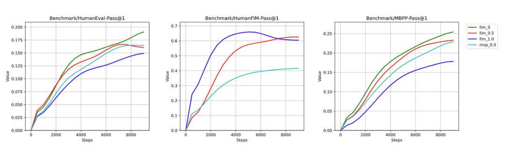上图设计了消融实验对比FIM数据占比对训练的影响，发现FIM数据50%占比（红色）能更好兼顾代码生成 （HumanEval、MBPP）和代码补全 （HumanFIM）类任务。
这与MLM虽然看起来很像，但还是有很大区别的，从目标上来讲，我们需要预测被挖掉的中间部分 (middle)，但关键前提是模型已经被显式提供了 suffix（右侧上下文）作为输入的一部分 。
从机制上来说，原始序列 [prefix][middle][suffix] 被重组为 [<FIM_PREFIX>][prefix][<FIM_SUFFIX>][suffix][<FIM_MIDDLE>][?]，模型在生成 middle 的每一个 token 时，它的输入序列中已经包含了完整的 prefix 和完整的 suffix ，并且它们位于当前生成位置 (<FIM_MIDDLE> 之后) 的左侧 。当模型开始预测 <FIM_MIDDLE> 之后的第一个 token (即 middle 的开始) 时，都能访问到完整的 prefix (左侧原始上下文) 和完整的 suffix (右侧原始上下文)。简言之，FIM 巧妙地利用序列重组和特殊标记，将原本在“未来”的 suffix 信息移动到了需要预测的 middle 的“过去” 。
后来我又想了想，为啥大模型会犯这种错误呢，我也没太理解，而且Deepseek信誓旦旦的告诉我Deepseek使用MLM+CLM提升了性能。直到我打开了Deepseek的联网搜索，看了一眼搜索结果，发现这个混合任务指向的其实是Deepseek引入的MTP。只能说模型有幻觉，采纳需谨慎。
但除此之外还存在一些问题，我觉得最大的问题在于Tokenizer，训练时我直接使用了原有的词表，但觉得针对对话数据训练的词表直接用于代码任务并不是非常合适。所以我考虑了如下两个方案：
现有词表长度为6400，使得LLM总参数量只有25.8M，如果直接用Qwen-Coder 3 的词表，长度变为151643，会使得词嵌入embedding层参数在LLM占比太高，而且更大的词表需要更多样本来充分训练所有token，显然我也没有这么多算力，最终也与我训练小模型的目标相悖，所以最终还是没有考虑。
在这期间我也学习了一些相关的知识，老实说以前是不怎么关心词表的，只是了解了一些分词算法什么的就草草略过了，现在看来非常可笑。
基于 CodeSearchNet 数据集的预训练 直接训练 换用了CodeSearchNet中的java和python部分进行预训练，首先直接使用原数据集进行训练，输入文本构造为：
1 text = f"{self.tokenizer.bos_token} {sample['docstring' ]} \n```{sample['language' ]} \n{sample['function' ]} \n```{self.tokenizer.eos_token} "
同时调整了超参数：
测试了一下结果并不是很好
数据集优化后的训练 使用上面数据构造后，过滤掉了长度大于1024 的数据，并将短数据进行了拼接（拼接后长度不超过1024）
1 2 3 4 5 6 7 8 ============================================================ SUMMARY ============================================================ Original samples: 1,156,085 Samples after filtering (≤1024 chars): 860,887 Removed samples (>1024 chars): 295,198 Final concatenated samples: 484,856 Data reduction ratio: 41.94%
训练了24个epoch，第9个epoch触发了早停，测试了一下，学到了一些语法，比之前训练好一些，不过HumanEval测试就很难pass了，top3都是0%：

FIM 介绍部分摘自https://zhuanlan.zhihu.com/p/3217226274。参考OpenAI的《Efficient Training of Language Models to Fill in the Middle》来介绍一下。
FIM效果 为了让模型同时具备正常的从左到右的生成能力，需要使用left-to-right和FIM两个方式混合的数据，FIM数据的比例成为FIM rate。
在实际训练模型中，OpenAI使用FIM rate = 0.5，即训练数据中一半进行了这种切分和转换，另一半保持正常的从左到右顺序。
实验中发现，混入FIM数据之后，模型在正常left-to-right的能力上基本上没有收到任何损害，如下图
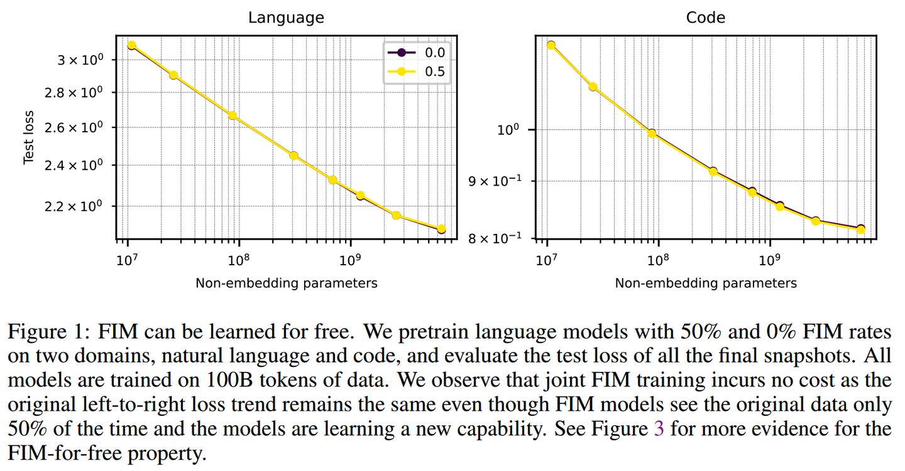相当于模型没有付出任何代价就多学到了FIM的能力，OpenAI称之为FIM-for-free property。
通常的PPL测试不能看出FIM带来的收益，为了评测模型FIM，OpenAI专门构建一个infilling benchmark。infilling benchmark中的数据来源于HumanEval，通过删除中间的部分代码，要求模型补全来检验FIM能力。
有无使用FIM数据的模型，在FIM测试上的对比如下：
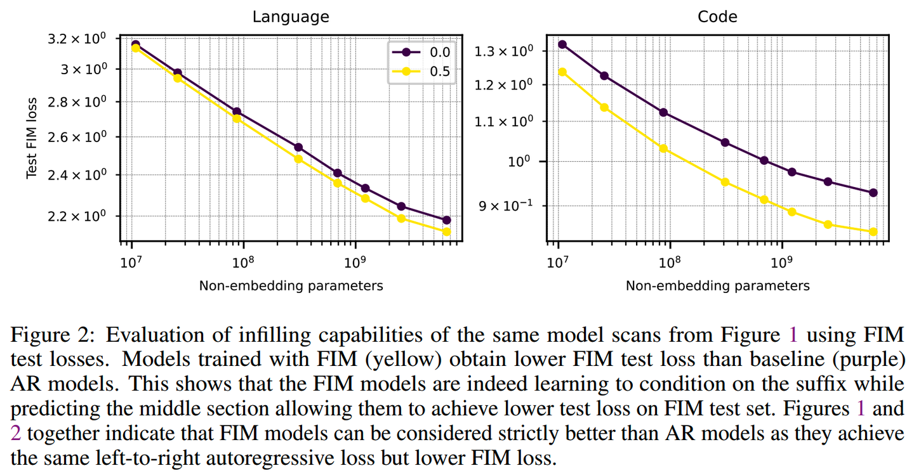加入FIM明显地提升模型的infilling能力。
训练 训练的时候，不止有middle部分的loss会bp，prefix和suffix也和left-to-right的数据一样会进行训练，这样FIM相比left-to-right并不会损失loss信号的量。
前面这种拼接方式，数据的顺序是Prefix、Suffix、Middle，简称为PSM。PSM是最符合直觉的一种拼接方式。而除了PSM，还可以使用SPM的拼接顺序。文中提到，SPM相比PSM有一个好处，那就是在推理的时候前面已经计算过的KV cache可以复用。（不过这里感觉有点奇怪，只要不把新生成的token拼接到Prefix部分，其实PSM的KV cache也是可以服用的）
那么PSM和SPM的效果如何？实验了SPM、PSM和二者一起训练，效果如下：
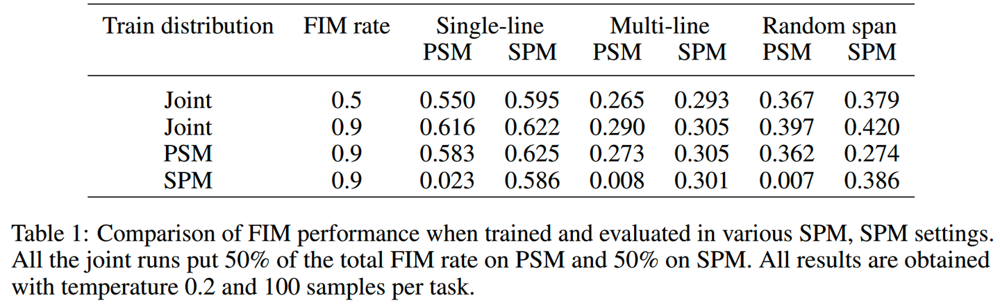从结果上看，二者都用的效果是最好的。
FIM rate FIM rate应该设置为多少合适？文中做了消融实验，对比FIM rate = (0, 0.25, 0.5, 0.75, 0.9, 1.0)的效果。结果如下：
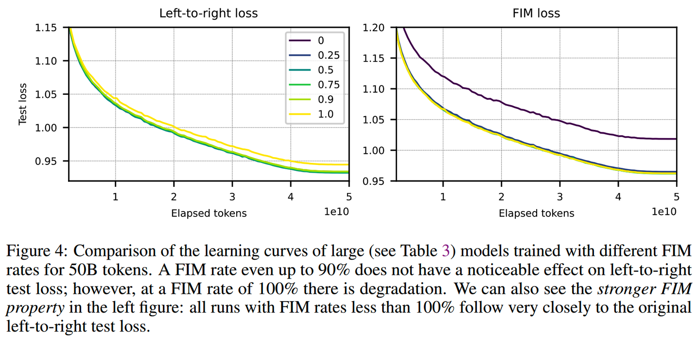不同的FIM rate对left-to-right几乎没有什么影响（除了FIM rate = 1.0），而FIM loss则是只要使用FIM数据，就有明显提升。FIM rate = 0.5和0.9的效果差不多，最终使用的是0.5。
数据切分 前面说了数据要被切成三部分，那么具体怎么切？论文提供了三种粒度的对比，Line-level random span、Token-level random span、Character-level random span。三种粒度的切分都保证prefix、suffix、middle的期望长度都是总长度的1/3。结果如下：
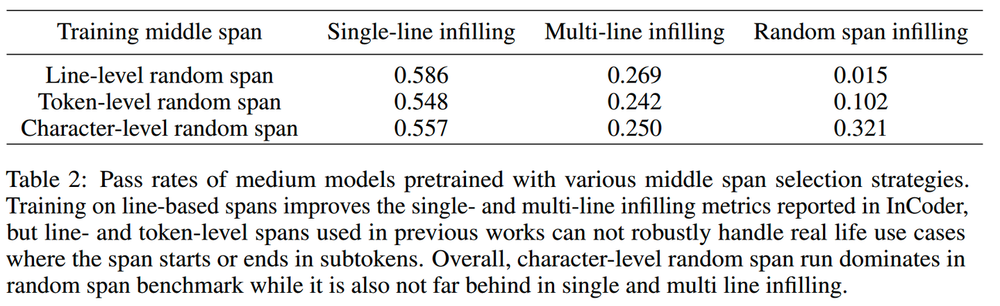character level的整体效果最好。
训练结果 这里依然使用了前面拼接后的数据集，将其中的部分数据替换为了FIM，不过这样带来的一个问题就是，FIM会有新的标记填充，可能导致单个序列长度超过1024（可能导致触发CUDA error: device-side assert triggered，虽然这个报错的触发原因很多），所以额外加了FIM任务数量上限，即代码中的如下部分：
1 2 3 4 5 6 7 8 available_length = self.max_length - fim_token_length max_fim_number = available_length // fim_token_length max_fim_contents = max (1 , min (2 , num_contents // 2 )) max_fim_contents = min (max_fim_contents, max_fim_number) num_fim_contents = random.randint(1 , max_fim_contents)
1 2 3 4 5 6 7 8 9 10 11 12 13 14 15 16 17 18 19 20 21 22 23 24 25 26 27 28 29 30 31 32 33 34 35 36 37 38 39 40 41 42 43 44 45 46 47 48 49 50 51 52 53 54 55 56 57 58 59 60 61 62 63 64 65 66 67 68 69 70 71 72 73 74 75 76 77 78 79 80 81 82 83 84 85 86 87 88 89 90 91 92 93 94 95 96 97 98 99 100 101 102 103 104 105 106 107 108 109 110 111 112 113 114 115 116 117 118 119 120 121 122 123 124 125 126 127 128 129 130 131 132 133 134 135 136 137 138 139 140 141 142 143 144 145 146 147 148 149 150 151 152 153 154 155 156 157 158 159 160 161 162 163 164 165 166 167 168 169 170 171 172 173 class FIMPretrainDataset (Dataset ): def __init__ (self, data_path, tokenizer, max_length=1024 , fim_ratio=0.5 ): super ().__init__() self.tokenizer = tokenizer self.max_length = max_length self.fim_ratio = fim_ratio self.samples = self.load_data(data_path) self._add_fim_tokens() def _add_fim_tokens (self ): """添加FIM特殊标记到tokenizer中""" special_tokens = [FIM_PREFIX, FIM_MIDDLE, FIM_SUFFIX] new_tokens = [] for token in special_tokens: if token not in self.tokenizer.get_vocab(): new_tokens.append(token) if new_tokens: self.tokenizer.add_tokens(new_tokens) print (f"Added FIM tokens to tokenizer: {new_tokens} " ) def _parse_concatenated_text (self, text ): """解析拼接的文本，返回各个content段落的列表""" pattern = r'<s>(.*?)</s>' matches = re.findall(pattern, text, re.DOTALL) return matches def _apply_fim_to_content (self, content ): """对单个content应用FIM变换""" tokens = self.tokenizer.encode(content, add_special_tokens=False ) if len (tokens) < 40 : return None total_len = len (tokens) min_part_len = max (1 , total_len // 10 ) max_prefix_len = max (min_part_len, int (total_len * 0.6 )) prefix_len = random.randint(min_part_len, max_prefix_len) remaining_len = total_len - prefix_len if remaining_len < 2 * min_part_len: return None max_middle_len = max (min_part_len, remaining_len - min_part_len) middle_len = random.randint(min_part_len, max_middle_len) suffix_start = prefix_len + middle_len if suffix_start >= total_len: return None prefix_tokens = tokens[:prefix_len] middle_tokens = tokens[prefix_len:suffix_start] suffix_tokens = tokens[suffix_start:] prefix = self.tokenizer.decode(prefix_tokens, skip_special_tokens=True ) middle = self.tokenizer.decode(middle_tokens, skip_special_tokens=True ) suffix = self.tokenizer.decode(suffix_tokens, skip_special_tokens=True ) fim_content = f"{FIM_PREFIX} {prefix} {FIM_SUFFIX} {suffix} {FIM_MIDDLE} {middle} " return fim_content def _create_mixed_sequence (self, original_text ): """创建混合了FIM和CLM的序列""" contents = self._parse_concatenated_text(original_text) if not contents: return None num_contents = len (contents) fim_token_length = len (FIM_PREFIX) + len (FIM_SUFFIX) + len (FIM_MIDDLE) available_length = self.max_length - fim_token_length max_fim_number = available_length // fim_token_length max_fim_contents = max (1 , min (2 , num_contents // 2 )) max_fim_contents = min (max_fim_contents, max_fim_number) num_fim_contents = random.randint(1 , max_fim_contents) fim_indices = random.sample(range (num_contents), num_fim_contents) new_contents = [] for i, content in enumerate (contents): if i in fim_indices: fim_content = self._apply_fim_to_content(content) if fim_content is not None : new_contents.append(f"<s>{fim_content} </s>" ) else : new_contents.append(f"<s>{content} </s>" ) else : new_contents.append(f"<s>{content} </s>" ) return '' .join(new_contents) def load_data (self, path ): files = ['python_all_concatenated.jsonl' ] samples = [] data_dir = path if os.path.isdir(path) else os.path.dirname(path) for file in files: file_path = os.path.join(data_dir, file) if not os.path.exists(file_path): continue try : with open (file_path, 'r' , encoding='utf-8' ) as f: for line_num, line in enumerate (f, 1 ): data = json.loads(line.strip()) samples.append(data) except Exception as e: continue if not samples: raise ValueError(f"No valid data found in {data_dir} " ) return samples def __len__ (self ): return len (self.samples) def __getitem__ (self, index ): sample = self.samples[index] original_text = sample['text' ] use_fim = random.random() < self.fim_ratio if use_fim: mixed_text = self._create_mixed_sequence(original_text) if mixed_text is not None : text = mixed_text else : text = original_text else : text = original_text encoding = self.tokenizer( text, max_length=self.max_length, padding='max_length' , truncation=True , return_tensors='pt' ) input_ids = encoding.input_ids.squeeze() loss_mask = (input_ids != self.tokenizer.pad_token_id) X = input_ids[:-1 ].clone().detach() Y = input_ids[1 :].clone().detach() loss_mask = loss_mask[1 :].clone().detach().long() return X, Y, loss_mask
Loss跟之前基本一致：

测试结果上还没有之前生成的质量好，反思了一下，感觉主要还是掩码的问题，FIM也使用了CLM的掩码，主要是看到前文提到：
训练的时候，不止有middle部分的loss会bp，prefix和suffix也和left-to-right的数据一样会进行训练，这样FIM相比left-to-right并不会损失loss信号的量
但是我觉得对于打乱后的psm序列，无法直接与CLM任务等价，毕竟是乱序的输入，虽然添加了标识分割，但不确定是否会导致模型学习到错误的语法，尤其是对于极小的模型。于是还是决定只计算middle的损失。不过这样的话，原有的逻辑也需要改，原本是将拼接后的数据块中的部分替换为FIM，但这样导致掩码计算很复杂，于是在替换后长度不超限制的前提下，直接将整块数据全部使用FIM或不使用，掩码计算上也方便很多。
1 2 3 4 5 6 7 8 9 10 11 12 13 14 15 16 17 18 19 20 21 22 23 24 25 26 27 28 29 30 31 32 33 34 35 36 37 38 39 40 41 42 43 44 45 46 47 48 49 50 51 52 53 54 55 56 57 58 59 60 61 62 63 64 65 66 67 68 69 70 71 72 73 74 75 76 77 78 79 80 81 82 83 84 85 86 87 88 89 90 91 92 93 94 95 96 97 98 99 100 101 102 103 104 105 106 107 108 109 110 111 112 113 114 115 116 117 118 119 120 121 122 123 124 125 126 127 128 129 130 131 132 133 134 135 136 137 138 139 140 141 142 143 144 145 146 147 148 149 150 151 152 153 154 155 156 157 158 159 160 161 162 163 164 165 166 167 168 169 170 171 172 173 174 175 176 177 178 179 180 181 182 183 184 185 186 187 188 189 190 191 192 193 194 195 196 197 198 199 200 201 202 203 204 205 206 207 208 209 210 211 212 213 214 215 216 217 218 219 220 221 222 223 224 225 226 227 228 229 230 231 232 233 234 235 236 237 238 239 240 241 242 243 244 245 246 247 248 249 250 251 252 class FIMPretrainDataset (Dataset ): def __init__ (self, data_path, tokenizer, max_length=1024 , fim_ratio=0.5 ): super ().__init__() self.tokenizer = tokenizer self.max_length = max_length self.fim_ratio = fim_ratio self.samples = self.load_data(data_path) self._add_fim_tokens() def _add_fim_tokens (self ): """添加FIM特殊标记到tokenizer中""" special_tokens = [FIM_PREFIX, FIM_MIDDLE, FIM_SUFFIX] new_tokens = [] for token in special_tokens: if token not in self.tokenizer.get_vocab(): new_tokens.append(token) if new_tokens: self.tokenizer.add_tokens(new_tokens) print (f"Added FIM tokens to tokenizer: {new_tokens} " ) def _parse_concatenated_text (self, text ): """解析拼接的文本，返回各个content段落的列表""" pattern = r'<s>(.*?)</s>' matches = re.findall(pattern, text, re.DOTALL) return matches def _apply_fim_to_content (self, content ): """对单个content应用FIM变换，返回FIM内容和middle部分信息""" tokens = self.tokenizer.encode(content, add_special_tokens=False ) total_len = len (tokens) if total_len < 6 : prefix_len = max (1 , total_len // 3 ) middle_len = max (1 , total_len // 3 ) suffix_start = prefix_len + middle_len prefix_tokens = tokens[:prefix_len] middle_tokens = tokens[prefix_len:suffix_start] suffix_tokens = tokens[suffix_start:] else : min_part_len = max (1 , total_len // 10 ) max_prefix_len = max (min_part_len, int (total_len * 0.6 )) prefix_len = random.randint(min_part_len, max_prefix_len) remaining_len = total_len - prefix_len if remaining_len < 2 * min_part_len: prefix_len = max (min_part_len, total_len - 2 * min_part_len) remaining_len = total_len - prefix_len max_middle_len = max (min_part_len, remaining_len - min_part_len) middle_len = random.randint(min_part_len, max_middle_len) suffix_start = prefix_len + middle_len if suffix_start >= total_len: middle_len = max (min_part_len, total_len - prefix_len - min_part_len) suffix_start = prefix_len + middle_len prefix_tokens = tokens[:prefix_len] middle_tokens = tokens[prefix_len:suffix_start] suffix_tokens = tokens[suffix_start:] prefix = self.tokenizer.decode(prefix_tokens, skip_special_tokens=True ) middle = self.tokenizer.decode(middle_tokens, skip_special_tokens=True ) suffix = self.tokenizer.decode(suffix_tokens, skip_special_tokens=True ) fim_content = f"{FIM_PREFIX} {prefix} {FIM_SUFFIX} {suffix} {FIM_MIDDLE} {middle} " return fim_content, middle def _create_mixed_sequence (self, original_text ): """将整个序列全部替换为FIM格式，返回FIM序列和middle部分列表""" contents = self._parse_concatenated_text(original_text) if not contents: return None , [] fim_token_length = len (FIM_PREFIX) + len (FIM_SUFFIX) + len (FIM_MIDDLE) content_num = len (contents) if fim_token_length * content_num + len (original_text) > self.max_length: return None , [] new_contents = [] middle_parts = [] for content in contents: fim_content, middle = self._apply_fim_to_content(content) new_contents.append(f"<s>{fim_content} </s>" ) middle_parts.append(middle) return '' .join(new_contents), middle_parts def _create_fim_loss_mask (self, input_ids, middle_parts ): """为FIM任务创建损失掩码，仅对middle部分计算损失""" loss_mask = torch.zeros_like(input_ids, dtype=torch.bool ) if not middle_parts: return loss_mask try : full_text = self.tokenizer.decode(input_ids, skip_special_tokens=False ) fim_middle_positions = [] search_pos = 0 while True : pos = full_text.find(FIM_MIDDLE, search_pos) if pos == -1 : break fim_middle_positions.append(pos) search_pos = pos + len (FIM_MIDDLE) for i, middle_text in enumerate (middle_parts): if not middle_text.strip(): continue if i >= len (fim_middle_positions): break fim_middle_pos = fim_middle_positions[i] search_start = fim_middle_pos + len (FIM_MIDDLE) search_end = fim_middle_positions[i + 1 ] if i + 1 < len (fim_middle_positions) else len (full_text) middle_start_pos = full_text.find(middle_text, search_start, search_end) if middle_start_pos == -1 : continue prefix_text = full_text[:middle_start_pos] prefix_tokens = self.tokenizer.encode(prefix_text, add_special_tokens=False ) middle_tokens = self.tokenizer.encode(middle_text, add_special_tokens=False ) start_idx = len (prefix_tokens) end_idx = start_idx + len (middle_tokens) start_idx = max (0 , min (start_idx, len (input_ids))) end_idx = max (start_idx, min (end_idx, len (input_ids))) loss_mask[start_idx:end_idx] = True except Exception as e: pass return loss_mask def load_data (self, path ): files = ['python_all_concatenated.jsonl' ] samples = [] data_dir = path if os.path.isdir(path) else os.path.dirname(path) for file in files: file_path = os.path.join(data_dir, file) if not os.path.exists(file_path): continue try : with open (file_path, 'r' , encoding='utf-8' ) as f: for line_num, line in enumerate (f, 1 ): data = json.loads(line.strip()) samples.append(data) except Exception as e: continue if not samples: raise ValueError(f"No valid data found in {data_dir} " ) return samples def __len__ (self ): return len (self.samples) def __getitem__ (self, index ): sample = self.samples[index] original_text = sample['text' ] use_fim = random.random() < self.fim_ratio middle_parts = [] if use_fim: mixed_text, middle_parts = self._create_mixed_sequence(original_text) if mixed_text is not None : text = mixed_text else : text = original_text use_fim = False else : text = original_text encoding = self.tokenizer( text, max_length=self.max_length, padding='max_length' , truncation=True , return_tensors='pt' ) input_ids = encoding.input_ids.squeeze() if use_fim and middle_parts: loss_mask = self._create_fim_loss_mask(input_ids, middle_parts) else : loss_mask = (input_ids != self.tokenizer.pad_token_id) X = input_ids[:-1 ].clone().detach() Y = input_ids[1 :].clone().detach() loss_mask = loss_mask[1 :].clone().detach().long() return X, Y, loss_mask
训练数据上也是一如既往，测试结果也是一如既往：

混合精度训练 这部分主要是AMP自动实现的，不过代码里有一点小瑕疵，即 ：loss = (loss * loss_mask).sum() / loss_mask.sum() 这部分仍处在混合精度上下文中，可能会导致一些精度上的损失。
直接从网上博客里摘了一部分，来自https://blog.csdn.net/m0_61899108/article/details/122801824
权重备份（Weight Backup） 权重备份主要用于解决舍入误差的问题。其主要思路是把神经网络训练过程中产生的激活activations、梯度 gradients、中间变量等数据，在训练中都利用FP16来存储，同时复制一份FP32的权重参数weights，用于训练时候的更新。具体如下图所示。
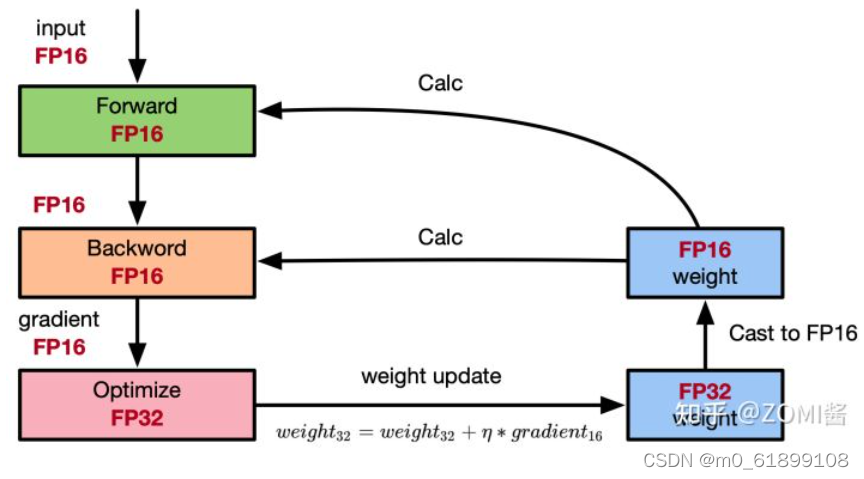从图中可以了解，在计算过程中所产生的权重weights，激活activations，梯度gradients等均使用 FP16 来进行存储和计算，其中权重使用FP32额外进行备份。由于在更新权重公式为:
w e i g h t = w e i g h t + η ∗ g r a d i e n t weight=weight+\eta*gradient w e i g h t = w e i g h t + η ∗ g r a d i e n t
深度模型中，l r × g r a d e n t lr \times gradent l r × g r a d e n t
w e i g h t 32 = w e i g h t 32 + η ∗ g r a d i e n t 16 weight_{32}=weight_{32}+\eta*gradient_{16} w e i g h t 32 = w e i g h t 32 + η ∗ g r a d i e n t 16
权重用FP32格式备份一次，那岂不是使得内存占用反而更高了呢？是的，额外拷贝一份weight的确增加了训练时候内存的占用。 但是实际上，在训练过程中内存中分为动态内存和静态内容，其中动态内存是静态内存的3-4倍，主要是中间变量值和激活activations的值。而这里备份的权重增加的主要是静态内存。只要动态内存的值基本都是使用FP16来进行存储，则最终模型与整网使用FP32进行训练相比起来， 内存占用也基本能够减半。
损失缩放（Loss Scaling） 如图所示，如果仅仅使用FP32训练，模型收敛得比较好，但是如果用了混合精度训练，会存在网络模型无法收敛的情况。原因是梯度的值太小，使用FP16表示会造成了数据下溢出（Underflow）的问题，导致模型不收敛，如图中灰色的部分。于是需要引入损失缩放（Loss Scaling）技术。
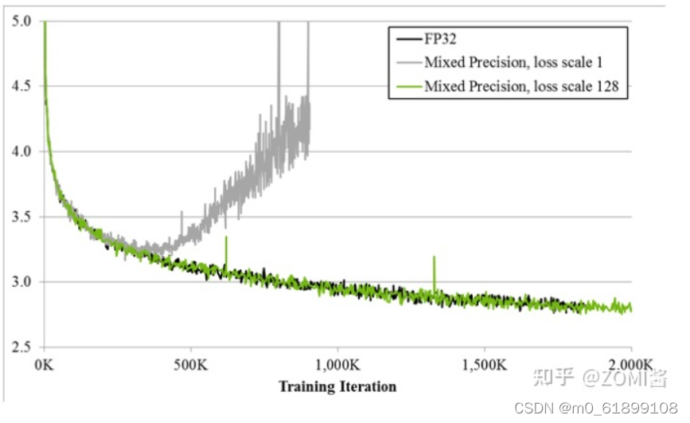下面是在网络模型训练阶段， 某一层的激活函数梯度分布式中，其中有68%的网络模型激活参数位0，另外有4%的精度在2^-32~2^-20这个区间内，直接使用FP16对这里面的数据进行表示，会截断下溢的数据，所有的梯度值都会变为0。
为了解决梯度过小数据下溢的问题，对前向计算出来的Loss值进行放大操作，也就是把FP32的参数乘以某一个因子系数后，把可能溢出的小数位数据往前移，平移到FP16能表示的数据范围内。根据链式求导法则，放大Loss后会作用在反向传播的每一层梯度，这样比在每一层梯度上进行放大更加高效。
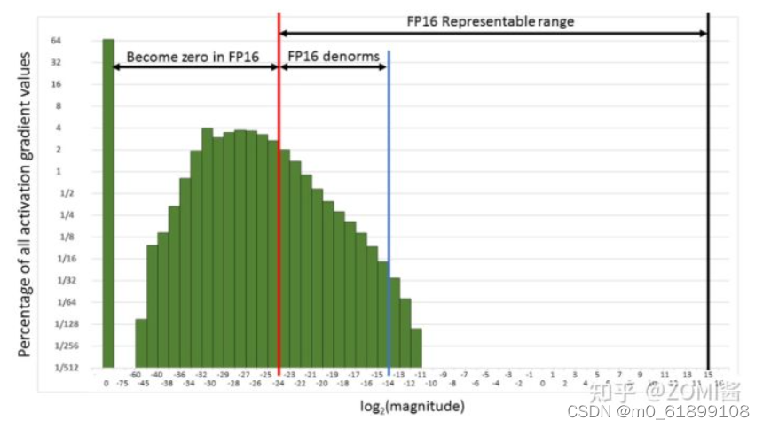损失放大是需要结合混合精度实现的，其主要的主要思路是：
Scale up阶段 ，网络模型前向计算后在反响传播前，将得到的损失变化值DLoss增大2^K倍。Scale down阶段 ，反向传播后，将权重梯度缩2^K倍，恢复FP32值进行存储。动态损失缩放（Dynamic Loss Scaling）：上面提到的损失缩放都是使用一个默认值对损失值进行缩放，为了充分利用FP16的动态范围，可以更好地缓解舍入误差，尽量使用比较大的放大倍数。总结动态损失缩放算法，就是每当梯度溢出时候减少损失缩放规模，并且间歇性地尝试增加损失规模，从而实现在不引起溢出的情况下使用最高损失缩放因子，更好地恢复精度。
动态损失缩放的算法如下：
动态损失缩放的算法会从比较高的缩放因子开始（如2^24），然后开始进行训练迭代中检查数是否会溢出（Infs/Nans）； 如果没有梯度溢出，则不进行缩放，继续进行迭代；如果检测到梯度溢出，则缩放因子会减半，重新确认梯度更新情况，直到数不产生溢出的范围内； 在训练的后期，loss已经趋近收敛稳定，梯度更新的幅度往往小了，这个时候可以允许更高的损失缩放因子来再次防止数据下溢。 因此，动态损失缩放算法会尝试在每N（N=2000）次迭代将损失缩放增加F倍数，然后执行步骤2检查是否溢出。 精度累加（Precision Accumulated） 在混合精度的模型训练过程中，使用FP16进行矩阵乘法运算，利用FP32来进行矩阵乘法中间的累加（accumulated），然后再将FP32的值转化为FP16进行存储。简单而言，就是利用FP16进行矩阵相乘，利用FP32来进行加法计算弥补丢失的精度。 这样可以有效减少计算过程中的舍入误差，尽量减缓精度损失的问题。
例如在Nvidia Volta 结构中带有Tensor Core，可以利用FP16混合精度来进行加速，还能保持精度。Tensor Core主要用于实现FP16的矩阵相乘，在利用FP16或者FP32进行累加和存储。在累加阶段能够使用FP32大幅减少混合精度训练的精度损失。
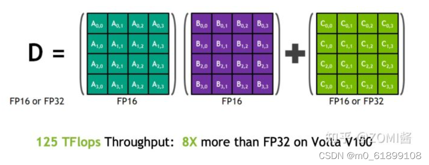MTP 摘自：https://zhuanlan.zhihu.com/p/14890557782
DeepSeek-V3 创新性地采用了 MTP 目标，将预测范围扩展到每个位置的多个后续 token 。
这种设计具有双重优势：
首先，MTP 目标通过增加训练信号的密度可能提高数据利用效率；其次，它使模型能够提前规划表征，从而更准确地预测后续 token。
如图3所示，该实现方案与先前研究的方法有所不同：前者使用独立输出头并行预测 DD 个额外 token，而 DeepSeek-V3 采用顺序预测方式，并在每个预测层级保持完整的因果关系链。
图3：MTP实现示意图。V3在每个深度上保持每个 token 预测过程中的完整因果依赖链。
MTP 模块架构：具体实现中，模型采用 D 个串联模块来预测 D 个额外的 token。每个 MTP 模块（第 k 个）包含以下组件：
共享向量层 Emb(·) 共享输出头 OutHead(·) Transformer 处理单元 TRM(·) 维度映射矩阵 M k ∈ R d × 2 d M_k \in \mathbb{R}^{d \times 2d} M k ∈ R d × 2 d t i t_i t i ( k − 1 ) (k-1) ( k − 1 ) h i k − 1 ∈ R d h_i^{k-1} \in \mathbb{R}^d h i k − 1 ∈ R d ( i + k ) (i+k) ( i + k ) E m b ( t i + k ) ∈ R d Emb(t_{i+k}) \in \mathbb{R}^d E mb ( t i + k ) ∈ R d h i k = M k [ RMSNorm ( h i k − 1 ) ; RMSNorm ( E m b ( t i + k ) ) ] , \mathbf{h}_i^{k} = M_k [\text{RMSNorm}(\mathbf{h}_i^{k-1}); \text{RMSNorm}(Emb(t_{i+k}))], h i k = M k [ RMSNorm ( h i k − 1 ) ; RMSNorm ( E mb ( t i + k ))] ,
其中 [ ⋅ ; ⋅ ] [ \cdot; \cdot ] [ ⋅ ; ⋅ ] k = 1 k = 1 k = 1 h i k − 1 h_i^{k-1} h i k − 1 h i k \mathbf{h}_i^{k} h i k h i k h_i^k h i k
h 1 : T − k k = TRM k ( h 1 : T − k k ) , \mathbf{h}_{1:T-k}^k = \text{TRM}_k(\mathbf{h}_{1:T-k}^{k}), h 1 : T − k k = TRM k ( h 1 : T − k k ) ,
其中 T T T i : j i:j i : j h i k h_i^k h i k P i + 1 + k k ∈ R V P_{i+1+k}^k \in \mathbb{R}^V P i + 1 + k k ∈ R V
P i + k + 1 k = OutHead ( h i k ) . P_{i+k+1}^k = \text{OutHead}(\mathbf{h}_i^k). P i + k + 1 k = OutHead ( h i k ) .
输出层 OutHead(·) 首先通过线性变换将特征表示转换为 logits，然后使用 Softmax(·) 函数计算第 k 个预测 token 的概率分布。与向量层类似，每个 MTP 模块的输出层也与主模型共享。这种保持预测因果链的设计思路与 EAGLE 相近，但两者目标不同：EAGLE 主要用于推测解码，而本研究中的 MTP 主要用于优化训练效果。L M T P k \mathcal{L}_{MTP}^k L MTP k
L M T P k = CrossEntropy ( P 2 + k : T + 1 k , t 2 + k : T + 1 ) = − 1 T ∑ i = 2 + k T + 1 log P i k [ t i ] \mathcal{L}_{MTP}^k = \text{CrossEntropy}(P_{2+k:T+1}^k, t_{2+k:T+1}) = -\frac{1}{T} \sum_{i=2+k}^{T+1} \log P_i^k[t_i] L MTP k = CrossEntropy ( P 2 + k : T + 1 k , t 2 + k : T + 1 ) = − T 1 i = 2 + k ∑ T + 1 log P i k [ t i ]
其中，T T T t i t_i t i P i k [ t i ] P_i^k[t_i] P i k [ t i ] t i t_i t i λ \lambda λ L M T P \mathcal{L}_{MTP} L MTP
L M T P = λ D ∑ k = 1 D L M T P k . \mathcal{L}_{MTP} = \frac{\lambda}{D} \sum_{k=1}^D \mathcal{L}_{MTP}^k. L MTP = D λ k = 1 ∑ D L MTP k .
推理阶段的MTP：应用 MTP 机制的主要目的是提升基础模型的性能，因此在实际推理阶段可以不使用 MTP 模块，基础模型能够独立完成正常推理。此外，这些 MTP 模块也可以被重新配置用于推理解码，从而降低模型生成的时间延迟。
数据集扩充 使用如下两个数据集进行数据扩充：
https://huggingface.co/datasets/angie-chen55/python-github-code
https://huggingface.co/datasets/Shuu12121/python-treesitter-filtered-datasetsV2
流程依旧是：构造，筛选，去重，拼接
然后，加载三份筛选过数据集，统一构造为{“text”：“data”}的格式，其中，code_search_net的构造格式为"<s> {sample['docstring']}{sample['language']}\n{sample['function']}</s>"，python-treesitter-filtered 数据集的构造格式为"<s> {sample['docstring']}{sample['language']}\n{sample['code']}</s>"，python-github-code 数据集已经是{“text”：“data”}格式。 其次，将构造好的三份数据集合并成一份数据，遍历所有数据，去除data长度小于48且大于1024数据的数据。 最后，对所有数据进行去重。 数据集去重实践 这块是真不熟，以前没怎么注意过。
刚开始想着直接TF-IDF+FAISS招呼一下得了，结果慢爆了，就想着拿ANN优化一下，于是试了一下HNSW，直接爆内存了（但其实内存上限没有达到，可能还是代码有问题），于是又使用IndexFlatIP替代HNSW，但其实还是换汤不换药，主要还是用了range_search太费时间，而且维护大量索引非常占内存，实测在1000维特征下占用到了约十倍数据集大小的内存。在16核的情况下，最开始时每处理1000个数据就要花费约80秒（当然这个会越来越快），
最后还是老老实实去看论文，比较新的应该是字节的SeedCoder ，预训练使用规则提取+FastText召回，后训练结合规则（Tree-sitter去语法错误）和模型（LLM评估正确性）进行质量过滤，好吧，这个有点跑题。
最后选择使用的是OpenCoder 建议的去重方案，即exact-dedup + file-level minhash+LSH，当然OpenCoder中的数据工作还是使用了非常多的启发式规则，而且也提到了Star高的代码总体质量在经过LLM打分后并不一定好。
最后主要耗时还是在生成MinHash签名的部分，主要也是没用并行优化，300W量级的数据一共生成了2个小时还多。最终结果如下：
1 2 3 4 5 6 7 8 9 10 11 12 13 14 15 生成 MinHash 签名... 生成MinHash: 100 %|███████████████████████████████████████████████████████████████████████████████████████| 3066083 /3066083 [2 :35 :39 <00 :00 , 328.29 it/s] 构建 LSH 索引... 构建LSH索引: 100 %|███████████████████████████████████████████████████████████████████████████████████████| 3066083 /3066083 [01:26 <00 :00 , 35530.14 it/s] 查找相似样本... 查找相似样本: 100 %|██████████████████████████████████████████████████████████████████████████████████████| 3066083 /3066083 [00 :54 <00 :00 , 55827.35 it/s] 生成最终结果... ===== 去重完成 ===== 总耗时: 9489.78 秒 原始样本: 3 ,178 ,796 精确重复: 112 ,713 相似重复: 347 ,412 总计去除: 460 ,125 剩余样本: 2 ,718 ,671 去重率: 14.47 %
总体的去重结果：
1 2 3 4 原始数据量: 3,202,132 长度筛选后: 3,178,796 去重后: 2,718,671 总去除比例: 15.10%
这里有很多精确重复，主要是python-treesitter-filtered包含了很多code_search_net中的数据。
SFT 数据集 https://huggingface.co/datasets/saurabh5/correct-python-sft-187k
https://huggingface.co/datasets/saurabh5/rlvr-code-data-python-sft
评估：HumanEval 这部分主要是参考https://github.com/abacaj/code-eval进行评估的执行
有个bug，应该跟pip版本有关系：
1 2 3 4 5 6 entry_points={ "console_scripts" : [ "evaluate_functional_correctness = human_eval.evaluate_functional_correctness:main" , ] }
结果是挺惨淡的
Reference https://zhuanlan.zhihu.com/p/14890557782
FIM：https://arxiv.org/pdf/2207.14255
https://zhuanlan.zhihu.com/p/3217226274
https://blog.csdn.net/m0_61899108/article/details/122801824
https://arxiv.org/pdf/2506.03524
https://arxiv.org/pdf/2411.04905